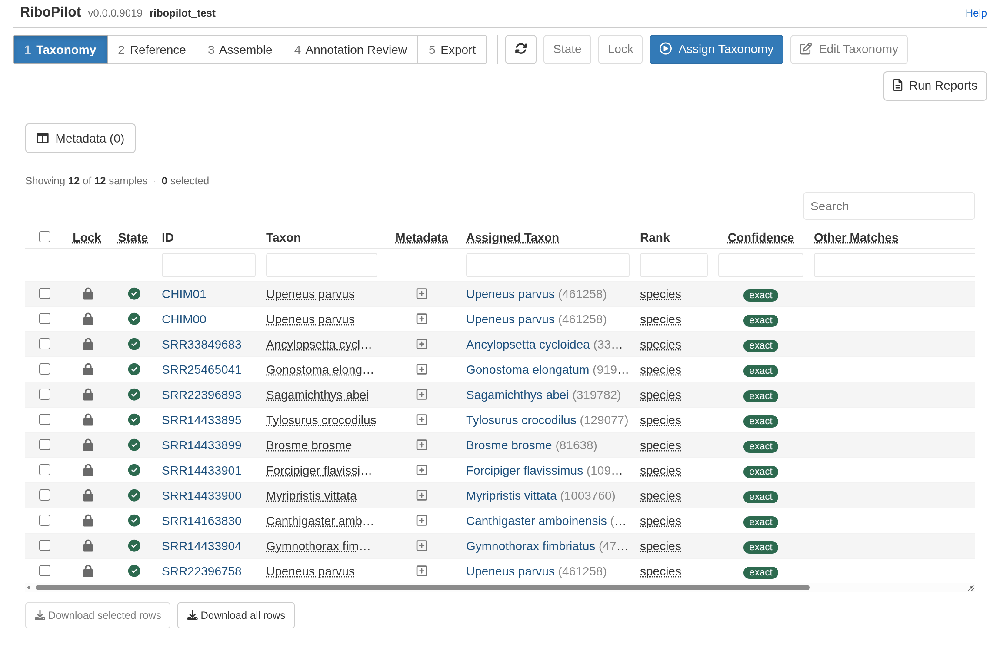

Test project: 0. Get started 1. Taxonomy 2. Reference 3. Assemble 4. Annotation Review 5. Export
This walkthrough picks up where Get started leaves off.
By clicking Assign Taxonomy, RiboPilot matches each Taxon in your mapping file to the NCBI taxonomy database. The first time this runs, it downloads about 80 MB and builds an index of about 0.5 GB inside the project, which takes a few minutes.
The Confidence column says how well your taxon names matched the NCBI taxonomy database:
| Confidence | What it means | What to do |
|---|---|---|
| exact | Your taxon name matched exactly one NCBI taxon. | Nothing. |
| fuzzy_species | No exact match, so a species of the same genus with a very similar name was picked. | Check the spelling. |
| fuzzy_genus | Only the genus matched. | Check the name, and pick the species if NCBI has it. |
| ambiguous | The name matches more than one organism; for example, the genus Morus is both a mulberry and a gannet. No taxon is set. | Pick the right one. The Other Matches column lists each candidate with its kingdom. |
| unresolved | No match. | Pick a taxon by hand. |
| manual | You picked the taxon by hand. | Nothing. |
To pick a taxon by hand, click the sample’s ID (or tick its row and press Edit Taxonomy), search for the name, and press Assign.
It’s important to carefully review the taxonomy for each of your samples. A sample with incorrect taxonomic assignment here will be checked against the wrong taxonomic groups during assembly and annotation.
When finished, tick all rows and press Lock. Only samples whose taxonomy is locked go on to the Assemble step. If you lock a sample that has no taxon, RiboPilot asks you first.
In the test project, all 12 test samples match exactly:
